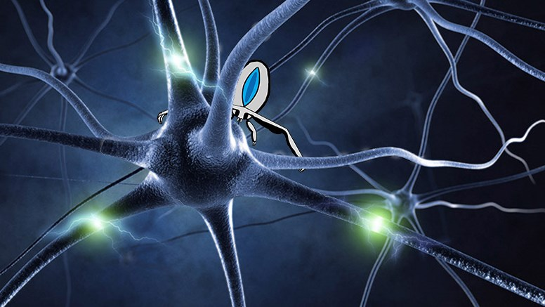
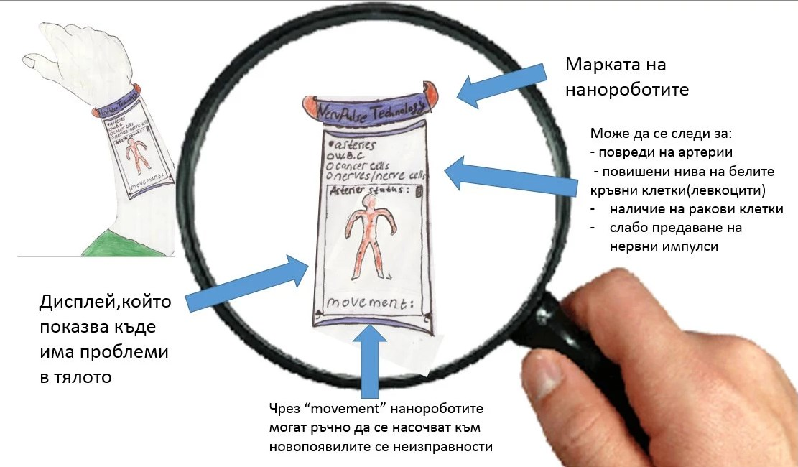
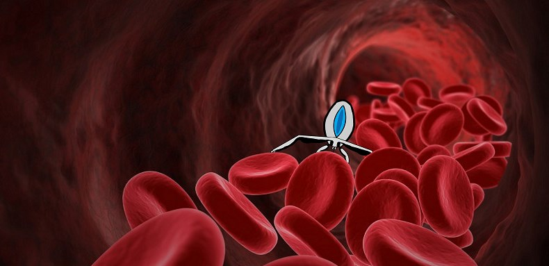

Как се правят нанороботи?
Нанотехнологиите са сравнително нов дял от физиката. Поради това те все още са недоразвити. Наноботите са роботи с големината на молекула. Техният размер е предизвикателство пред учените и инженерите, защото работата в този мащаб е трудна. Въпреки това съществуват няколко идеи как да се конструират. Един метод е известен като “ДНК оригами”. Използват се дълги единични нишки ДНК, подпомогнати от множество къси такива, изпълняващи ролята на “скоби”. Чрез компютърна програма се създават модели на наноструктури. Софтуерът определя къде да се поставят “скобите”. Те се свързват с дългата нишка ДНК чрез съответните комплементарни бази. Използвайки този подход, учените са създали наноструктура с формата на кутийка, която може да се отваря и затваря, а вътре в нея се поставя молекула на лекарствено вещество. Специална молекула-детектор засича, например, ракови клетки, след което кутийката се отваря и пуска лекарственото вещество. Друг подход е чрез триизмерно принтиране и лазерен офорт. Използвайки високо фокусиран лазер, се гравират детайлите на наноботите върху плоскост. След това триизмерен принтер запълва с подходящ материал(силикон, метал и др.) получената резка. Накрая отделните компоненти се свързват. Този метод позволява да се създадат и логически компоненти, например платки и процесори, които могат да бъдат използвани за управлението на наноботите.
Повече за нанотехнологиите и NervePulse
За да стигнат до артериите, нанороботите първо чрез инжекция навлизат във вените. При поправяне на артериите в тялото ни, наноботите минават покрай артериолите, правейки оглед на мускулните стени. Също така може да се стигне до намаляне скоростта на потока в капилярите, което намалява налягането и увеличава обмяната на газове и хранителни вещества. Най-драстичната промяна в кръвното налягане и скоростта на кръвния поток се извършва при прехода от артериолите към капилярите. От там NervеPulse роботите се носочват към по-плътните артерии, грижейки се за оптималното състояние на външния,средния и вътрешния им слой. По този начин достигат и до самата аорта.
От кръвта нанороботите следят за левкопения и левкоцитоза. Нормалното количество на левкоцитите в кръвта на възрастни е между 4500 и 10500 на микролитър. При отклонение от нормата, наноботите започват да изследват тялото като по този начин откриват заболяването в ранен стадий и това дава възможност за по-навременно и съответно - скоростно лечение.
Във всеки човек има ракови клетки и целта на нанороботите е тези клетки да бъдат установени преди размножаването им до няколко милиарда. Така няма да се налага броят им да расте, за да могат да бъдат открити от стандартни диагностични методи. Имунната система на човек успява да унищожава размножаването на раковите клетки и предотвратява тумори. Рак се развива и чрез недостиг на основни хранителни вещества за човека. Поради тази причина нашите NervеPulse роботи ще компенсират, като дадат сведения, към интерактивната гривна, за това какви вещества липсват в тялото на човека и трябва да се добавят за организма и също така се грижат раковите клетки да не получават необходимите вещества, чрез които да се размножават.
Друг вид нанороботи ще бъдат използвани за изграждане на временни вериги за предаване на нервни импулси и възстановяване на нервните клетки. Нервните клетки обработват и предават информация посредством електрически и химически сигнали. При неизправност в аксона, нашите NervеPulse роботи отиват до мястото на проблема. Нанороботите се прилепят към дългия израстък като по този начин изграждат вериги, през които може по-лесно да се предава информацията. Така те спомагат за оптималното функциониране на аксоните.

Във всеки индивидуален NervеPulse робот ще има вградена интерактивна карта на тялото, която ще спомага за навигирането на робота към конкреткото място за подпомагане и поправяне. Също така, нанороботите могат да се следят с интерактивна гривна, която показва състоянието и местоположението им. От гривната ще може да се следи къде в човешкото тяло има проблем с артерии или наличие на ракови клетки. Чрез гривната човек индивидуално би могъл да насочва нанороботите към проблемните места. Контактът между нанороботите и гривната се извършва чрез късовълнови вълни , благодарение на които, се осъществява сигнал.

NervePulse наноботите имат 2 начина на навлизане в човешкия организъм. Първият, по-безболезнен такъв, е чрез поглъщане на хапче, в което се съдържат наноботите. Наноботите се намират в хапче, за да бъде гарантирано, че никой от тях няма да остане в хранопровода и устата. Хапчето бива разтворено в стомаха на човека и работата на наноботите започва. Нашите наноботи са конструирани така, че не биват разтваряни от стомашните сокове и не отделят токсични киселини. Докато още са в стомаха, наноботите оглеждат стомаха на човека за язви. След това продължават към тънкото и дебелото черво, откъдето, поради невероятно малкия си размер, преминават в кръвоносната система. Те навлизат в кръвоносната система постепенно, за да не породят струпване и затрудняване на придвижването на кръвта. NervеPulse наноботите се разпръскват из цялото тяло. Те проверяват състоянието на кръвта и органите в тялото на човека, след което изпращат събраната информация, благодарение на късовълновите вълни, до интерактивната гривна, която преценява дали има нужда от лечение и какво да е то.
Вторият начин за навлизане на наноботите в организма, е чрез инжекция във вена. Този метод ще се използва, когато наноботите трябва да достигнат до организма бързо – например при инфаркт или инсулт. Тогава наноботите достигат до съответния орган и възстановяват кръвообращението.

Напускането на наноботите от организма се извършва чрез урината. Наноботите навлизат в бъбреците и от там биват отведени през пикочопроводите към пикочния мехур. Урината на човека се събира и наноботите биват използвани повторно.
Наноботите на NervеPulse могат също да подпомагат растежа на мускулите в човешкото тяло. При натоварване на мускулите вътрешните влакната в тях се разкъсват. Наноботите помагат в изграждането им наново, което допринася и до увеличаване на техния размер. Сътветно нарастват хормоните и белтъците, отговарящи за това, например тестостерон.
Но както всички знаем, това не би било възможно без достатъчно сън през нощта. NervеPulse наноботите също могат да помогнат на хора, които страдат от безсъние или изпитват проблеми при заспиването като цяло. Наноботите ще увеличават производството на ензими, които стимулират съня, така че хората, използващи наноботите, ще получават поне 8 часа сън на ден в часове, избрани от тях чрез опция в гривната им.
Цялата работа на наноботите е безопасна за организма на човека.